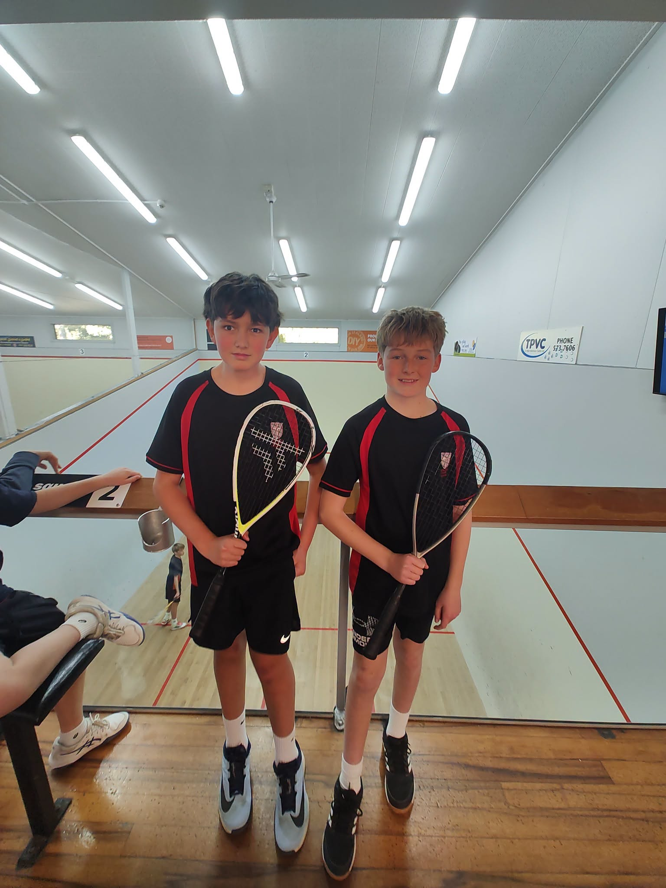
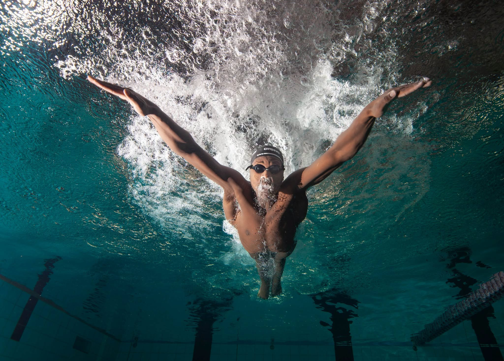

ACADEMIC INFORMATION
Ākonga and whānau Assessment Information on NZQF
John Paul College follows NZQA assessment guidelines to help ensure assessments are fair, valid and consistent. This guide explains the school's expectations for NCEA Levels 1–3, New Zealand Scholarship, and Achievement and Unit Standards.
SCHOOL LIFE
Extra Curricular Info
Sports and activities at JPC
Our school is committed to offering all students opportunities to participate in a range of individual and team sports, at both competitive and non-competitive levels.


Many teaching staff freely give their time as teachers in charge, coaches or managers of school sports teams. Their involvement shows how much the school values sport and encourages students to take part.
Our wider school community also supports teams, including parents, former students and current senior students who volunteer as coaches and managers.
Annual sports days
Swimming, Cross Country, Athletics and tabloid games are held each year. Students are encouraged to participate and earn points for their House Team. These events combine fun participation with opportunities for students aiming to represent JPC at regional and national competitions.
Contact Matua Baker to join or ask about a sport.
frank.baker@jpc.school.nz